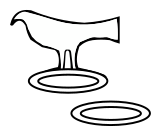

前王朝晚期
第 0 王朝（涅伽达末期）：3250-3050
约9-13位来自上埃及的希拉孔波利斯国王在位统治。最后四位的名字能够辨识（尽管并不清晰）：
| …. | |
|---|---|
| 荷鲁斯·“蝎”1（Horus “Scorpion”） | |
| 荷鲁斯·泽赫恩2？/卡？（Horus Zekhen?/Ka?） | 第一位埋葬在阿拜多斯（Abydos）的国王 |
| 荷鲁斯·罗3（Horus Ro） | 阿拜多斯（Abydos）王墓B 1+2 |
| 荷鲁斯·那尔迈4（Horus Narmer） | “鲶鱼” |
古风时期
（亦称 早王朝）
第 I 王朝：3050-2857
| 荷鲁斯·阿哈（Horus Aha） | 美尼（Meni） | 3050-3016 |
| 荷鲁斯·杰尔（Horus Djer） | 伊提（Iti） | 3016-2970 |
| 荷鲁斯·瓦吉（Horus Wadji） | 伊特尔提？（Iterti?） | 2970-2963 |
| 荷鲁斯·登（Horus Dewen） | 哈塞提/杰姆提？（Khasti/Zemti?） | 2963-2949 |
| 荷鲁斯·阿涅吉布（Horus Anedjib） | 美尔皮比亚？（Merpibia?） | 2949-2897 |
| 荷鲁斯·塞默赫特（Horus Semerkhet） | 伊里-涅布提（Iri-Nebti） | 2897-2889 |
| 荷鲁斯·卡阿（Horus Qa’a） | 卡阿-涅布提（Qa’a Nebti） | 2889-2859 |
| 荷鲁斯·巴？（Horus Ba?） | （顺序未定） | |
| 荷鲁斯·塞涅弗尔卡（Horus Seneferka） | （顺序未定） | 2859-2857 |
| 荷鲁斯…（Horus […]） | （顺序未定） |
第 II 王朝：2857-2705
| 荷鲁斯·赫特普塞赫姆威（Horus Hetepsekhemwy） | 赫特普-涅布提（Hetep-Nebty） | 2857- |
| 荷鲁斯·涅布拉（Horus Nebre） | -2815 | |
| 荷鲁斯·尼涅杰尔（Horus Ninetjer） | 尼涅杰尔-涅布提（ Ninetjer-Nebty） | 2815 -2778 |
| 荷鲁斯·乌涅格？（Horus Weneg?） | 乌涅格-涅布提（Weneg-Nebty） | 2778-2772 |
| 塞涅德（Sened） | 2772- | |
| 努布涅弗尔（Nubnefer） | -2751 | |
| 塞特·佩尔伊布森（Seth Peribsen） | 2751-2743 | |
| 荷鲁斯·塞赫姆伊布（-佩伦玛阿特）（Horus Sekhemib(-perenma’at)） | 2743-2732 | |
| 荷鲁斯·哈塞赫姆（Horus Khasekhem） | （与下一位国王为同一人） | |
| 荷鲁斯-塞特·哈塞赫姆威（-赫特普-涅杰尔威伊美夫）（Horus-Seth Khasekhemwy(-hetep-netjerwyimef)） | 2732-2705 |
古王国
第 III 王朝：2705-2630
| 荷鲁斯·涅赫特扎（扎）（Horus Nekhtza(Za)） | 涅布卡一世（Nebka I） | 2705-2687 |
| 荷鲁斯·涅杰里赫特（Horus Netjerikhet） | （左塞尔）（Djoser） | 2687-2667 |
| 荷鲁斯·塞赫姆赫特（Horus Sekhemkhet） | （左塞尔-特提）（Djoser-Teti） | 2667-2660 |
| 荷鲁斯·哈巴（Horus Khaba） | 2660-2654 | |
| 荷鲁斯·卡赫杰特（Horus Qahedjet） | 胡尼（Huni） | 2654-2630 |
第 IV 王朝：2630-2524
| 斯涅弗鲁（Snefru） | 2630-2606 | |
| （赫努姆-）胡夫伊（(Khnum-)Khufwi） | （胡夫/“齐奥普斯”）（Khufu/“Cheops”） | 2606-2583 |
| 拉杰德夫（Radjedef） | 杰德夫拉（Djedefre） | 2583-2575 |
| 哈夫拉（Khafre） | （“凯夫伦”）（”Chephren”） | 2575-2550 |
| 涅布卡二世（Nebka II） | 2550-2548 | |
| 蒙卡乌拉（Menkaure） | （“米凯里努斯”）（”Mycerinus”） | 2548-2530 |
| 舍普塞斯卡夫（Shepseskaf） | 2530-2526 | |
| [空位期？] | 2526-2524 |
第 V 王朝：2524-2400
| 乌塞尔卡夫（Userkaf） | 2524-2517 | |
| 萨胡拉（Sahure） | 2517-2505 | |
| 涅斐里尔卡拉一世·卡凯（Neferirkare I Kakai） | 2505-2495 | |
| 舍普塞斯卡拉·伊齐？（Shepseskare Izi?） | 2495-2488 | |
| 涅斐拉夫拉（Neferefre） | （拉涅斐拉夫？）（Raneferef?） | 2488- 2477 |
| 尼乌塞尔拉·伊尼（Niuserre Ini） | 2477-2466 | |
| 蒙卡乌荷尔·伊卡乌荷尔（Menkauhor Ikauhor） | 2466-2458 | |
| 杰德卡拉·伊泽齐（Djedkare Izezi） | 2458-2430 | |
| 乌尼斯（Unis） | 2430-2400 |
第 VI 王朝：2400-2250
| 特提（Teti） | 2400-2390 | |
| 佩皮一世（Pepi I） | 2390- | |
| 乌塞尔卡拉（Userkare） | （乌塞尔佩尔？）（Userper?） | -2382 |
| 佩皮一世（Pepi I） | （复辟！） | 2382-2361 |
| 美尔涅拉一世·涅姆提耶姆扎夫（Mernere I Nemtyemzaf） | 2361-2355 | |
| 佩皮二世（Pepi II） | 2355-2261 | |
| 美尔涅拉二世·涅姆提耶姆扎夫（Mernere II Nemtyemzaf） | 2261-2260 | |
| 女王 尼托克里斯（Queen Nitocris） | 2260-2250? |
第 VII 王朝：2250?-2230
阿拜多斯王名表中记录了十位国王，但在都灵王名表中被省略了（涅杰尔卡拉（Netjerkare）[阿拜多斯]=涅伊提克尔提（Neitiqerti）[都灵]）。同时期的资料上记载了这些王名：涅斐尔卡拉二世（Neferkare II）……塞赫姆卡拉（Sekhemkare）……瓦吉卡拉（统治顺序未定）。
第 VIII 王朝：2230-2213
六位国王，末四位从同时期的资料可知：
| …. | ||
|---|---|---|
| 卡卡拉·伊比（Qakare Ibi） | 2222-2220 | |
| 涅斐尔卡乌拉（Neferkaure） | （伊蒙荷特普？）（=Imhotep?） | 2220-2216 |
| 涅斐尔卡乌荷尔·卡普伊比（Neferkauhor Kapuibi） | （伊提？）（=Iti?） | 2216-2214 |
| 涅斐里尔卡拉二世（Neferirkare II） | 2214-2213 |
伊蒙荷特普（Imhotep）和伊提（Iti）（来自哈马马特干谷的涂鸦）两个个人名的归属并不确定。涅斐尔乌卡拉（Neferkaure）总的来说被认为与荷鲁斯·哈[巴乌？]（Horus Kha[bau?]）为同一人，涅斐里尔卡拉二世（Neferiekare II）与科普托斯法令上的荷鲁斯·德美吉布塔威（Horus Demedjibtawy）为同一人，但尚存疑。荷鲁斯·涅杰里巴乌（Horus Netjeribau）则确定与涅斐尔卡乌荷尔（Neferkauhor）为同一人。
第一中间期
第 IX 王朝：2213-约2175
四位在赫拉克利奥波利斯执政的国王，在埃及范围内大概获得了认可。顺序并不清楚：
| 美里布拉·阿赫托伊（Meryibre Akhtoy） | （=第一或第二位国王？） | 2213- |
| …. | ||
| 涅斐尔卡拉五世（Neferkare V） | （第三位国王） | 约2185- |
| …. | -2175 |
第 X 王朝：约2175-约2035
十四位统治北方的赫拉克利奥波利斯国王，与同时期底比斯的第十一王朝国王交战，直到于2047年和2022年间败于涅布赫佩特拉·蒙图荷特普二世（Nebhepetre Mentuhotep II）。六位国王可以由同时期的资料证明：
| …. | 约2175 | |
|---|---|---|
| 涅布卡乌拉·阿赫托伊（Nebkaure Akhtoy） | （美里卡拉的父亲？） | |
| 美里卡拉（Merikare） | 与后文瓦罕赫·因约特夫（Wahankh Inyotef）同时期统治 | 约2075 |
下列其他统治者的统治年代无法大致界定：
| | |
| 美里[…]拉·阿赫托伊（Meri[…]re Akhtoy）| （不是第十王朝的建立者“美里哈托尔”（Merihator））
| 瓦卡拉·阿赫托伊（Wahkare Akhtoy） | |
| 胡伊（Khui） | （从德拉（Dara）得到的碎片） |
| 伊杰努（Iytjenu） | 萨卡拉（Saqqara）的第X王朝个人名之一 |
第 XI 王朝：2134-1991
在许多传统的年表中，底比斯的第XI王朝被归入中王国而非第一中间期。但是，近年来埃及学家们修正了这一观点。这一王朝存在了约143年，其中99年王国处于分裂与内战之中，只有44年王国处于相对和平统一的状态。重要的是，后44年是政权巩固和国家重建的时期，只有到第XII王朝开始这些工作才得以完成。认为第XI王朝是中王国的开始是不合理的。
| 荷鲁斯·特皮奥（Horus Tepi-‘o） | 蒙图荷特普一世（Mentuhotep I） | 2134- |
|---|---|---|
| 荷鲁斯·塞赫尔塔威（Horus Sehertawy） | 因约特夫一世（Inyotef I） | -2118 |
| 荷鲁斯·瓦罕赫（Horus Wahankh） | 因约特夫二世（Inyotef II） | 2118-2069 |
| 荷鲁斯·涅赫特涅布特普涅斐尔（Horus Nekhtnebtepnefer） | 因约特夫三世（Inyotef III） | 2069-2061 |
| 荷鲁斯·珊希布塔威（Horus Sankhibtawy） | ||
| 荷鲁斯·达伊哈苏特（Horus Daikhasut）* | 与下两位个人名均为蒙图荷特普二世（Mentuhotep II） | |
| 荷鲁斯·涅布赫杰特（Horus Nebhedjet）# | 与下一位王名均为涅布赫佩特拉（Nebhepetre） | |
| 荷鲁斯·塞马塔威（Horus Sematawy）$ | 2061-2010 | |
| 珊赫卡拉（Sankhkare） | 蒙图荷特普三世（Mentuhotep III） | 2010-1998 |
| 卡卡拉·因约特夫四世（Qakare Inyotef IV） | （顺序未定） | |
| 伊布拉·亨特（Iyibre Khent） | （顺序未定） | |
| 涅布塔威拉（Nebtawyre） | 蒙图荷特普四世（Mentuhotep IV） | -1991 |
拿片假名拼也怪累的好吗（流汗
1. 因为石碑上的符号是个蝎子，所以称为蝎王（Scorpion II），可能读塞尔克（Selk）或者韦哈（Weha）（注释均为译者所加，不保证对错，图片出自维基百科en.wikiepdia.org，下同）。 ↩
2. 符号是两条上举的手臂，可能表示“力量”，过于抽象： ↩

3. “罗”（Ro）是弗林德斯·皮特里（Flinders Petrie）爵士的读法，现代一般被读作“伊里-荷尔”（Iry-Hor），符号是一个鸟下面两个环，意思可能是“荷鲁斯之主”： ↩

4. “那尔迈”（Narmer）是根据铭文读出来的名字，意思可能是“凶狠的鲶鱼”，符号是一个鲶鱼下面一根制杖，见https://en.wikipedia.org/wiki/Narmer ； ↩
*. Daikhasut大意为“征服者”，推测可能是蒙图荷特普二世在即位前使用的荷鲁斯名（译者猜测）。 ↩
#. Nebhedjet大意为“白王冠之主”，推测可能是蒙图荷特普二世即位上埃及统治者后使用的荷鲁斯名（译者猜测）。 ↩
$. Sematawy大意为“统一两土地（上下埃及）”，推测可能是蒙图荷特普二世统一埃及后使用的荷鲁斯名（译者猜测）。 ↩